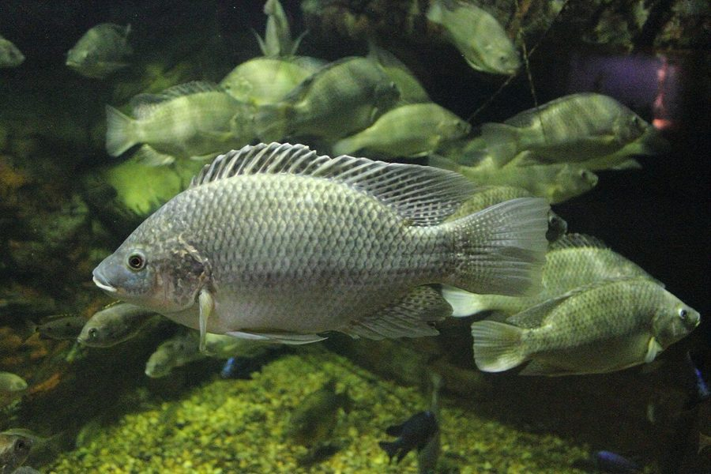

तिलापियाMozambique Tilapia
Oreochromis mossambicus · Cichlidae · FSH-0018

- Scientific nameवैज्ञानिक नाम
- Oreochromis mossambicus (Peters, 1852)
- Familyकुल
- Cichlidae
- Hindiहिंदी
- तिलापिया
- Local namesस्थानीय नाम
- tilapia, jilebi
- Status hereयहाँ की स्थिति
- invasive
- Movementआवागमन
- Resident, here all year
- IUCNIUCN
- VU
- Reviewसमीक्षा
- audited and independently read
When to look कब देखें
Present all year.साल भर मौजूद।
Uses and possibilities उपयोग और संभावनाएँ
Drawn from the documented uses in the profile below, where each is labelled traditional, current or a research lead. All uses →
Tell it apart from इनसे अलग पहचानें
तिलापिया / Mozambique Tilapia
Oreochromis mossambicus (Peters, 1852) — Cichlidae
तिलापिया — अफ़्रीका की मछली जो 1952 में भारत लाई गई और अब हर तालाब में है जहाँ कोई इसे नहीं चाहता। मादा अंडे और बच्चों को मुँह में रखकर पालती है, हर छह हफ़्ते में फिर से, इसलिए एक जोड़ी से साल भर में तालाब भर जाता है — छोटी, ठिगनी, हज़ारों मछलियों से जो रोहू-कतला के बच्चों का खाना और जगह खा जाती हैं। गँदले, खारे, गरम पानी में भी जीती है। खाने में ठीक है; तालाब के लिए नहीं।
Quick Identification त्वरित पहचान
| Feature | Description |
|---|---|
| Size | Usually 10–20 cm in ponds; up to 35 cm where not crowded |
| Shape | Deep-bodied, compressed, perch-like, with a single long dorsal fin |
| Colour | Grey to olive with faint dark bars; breeding males nearly black with a white throat and red-edged fins; females and young silvery-grey with a few dark blotches |
| Head | A steep forehead, large mouth; the male's snout becomes enlarged and duck-like in breeding dress |
| Fins | Dorsal with 15–17 spines then soft rays, pointed at the back; tail fan-shaped with a dark edge |
| Behaviour | Males dig round nests in the shallows; females carry eggs and fry in the mouth |
Field tip: Pull a net through any village pond and the small, deep-bodied, grey-barred fish that make up half the catch, none of them big, are tilapia. A black fish with a white throat guarding a saucer-shaped pit in the shallows is a breeding male. The native carp are longer, rounder and scaled in silver or gold.
हिंदी — कैसे पहचानें: गाँव के तालाब में जाल डालो तो आधी पकड़ छोटी, चौड़ी, स्लेटी धारीदार मछलियों की, कोई बड़ी नहीं — यही तिलापिया है। उथले पानी में तश्तरी जैसा गड्ढा घेरे काली, सफ़ेद गले वाली मछली प्रजनन करता नर है। देसी रोहू-कतला लंबी, गोल, चाँदी-सुनहरी होती हैं।
Morphology आकारिकी
Biometrics:
| Measurement | Range |
|---|---|
| Standard length, crowded ponds | 8–15 cm |
| Standard length, uncrowded | 20–35 cm |
| Weight | 20 g to 1 kg |
| Eggs per spawning | 100–800, depending on size |
| Spawning interval | 3–6 weeks in warm water |
| Maturity | at 3–4 months and 6–8 cm when crowded |
Body: A typical cichlid: a single nostril each side, a dorsal fin with a spiny front and soft rear, a lateral line in two parts. The jaws carry small teeth and the throat a second set of pharyngeal teeth for grinding.
Breeding dress: The male's black body, white chin and red fin margins, and the swollen snout, develop in the breeding season and fade after.
Mouthbrooding: The female takes the fertilised eggs into her mouth, holds them for about ten days until they hatch, then shelters the fry there for another week or two, releasing and recalling them. She does not eat meanwhile.
Stunting: In a crowded pond the fish mature tiny and breed at once, so the population becomes thousands of 8 cm fish and no large ones, which is the fisherman's complaint.
हिंदी: एक ही पृष्ठ-पंख, आगे काँटेदार पीछे मुलायम; जबड़ों में छोटे दाँत और गले में पीसने वाले दाँत। प्रजनन में नर काला, गला सफ़ेद, पंखों के किनारे लाल, थूथन फूला। मादा अंडे मुँह में दस दिन रखती है, फिर बच्चों को भी हफ़्ते-दो हफ़्ते, और तब तक खाती नहीं। भीड़ वाले तालाब में मछलियाँ छोटे में ही बच्चे देने लगती हैं और सब ठिगनी रह जाती हैं।
Behaviour & Ecology व्यवहार और पारिस्थितिकी
Brought to India from Thailand to Mandapam in Tamil Nadu in 1952 as a wonder fish for the poor, and within a decade recognised as a mistake: it escaped, bred faster than anything native, stunted, and spread through the canals and tanks of the south and then the whole country. In a pond it eats algae, plants, detritus, insects and the eggs and fry of other fish, tolerates heat, salt, sewage and low oxygen, and reproduces every few weeks; the native carp cannot keep up. It is now among the most widespread invasive fish on earth and, in its own African rivers, threatened by hybridisation with the Nile tilapia, which is the odd reason it is on the IUCN Red List.
Cormorants, Indian Pond Heron, Grey Heron, kingfishers and Great Snakehead eat it in quantity, which is the one service it renders: more fish-eating birds.
हिंदी: 1952 में थाईलैंड से तमिलनाडु के मंडपम लाई गई, ग़रीबों के लिए चमत्कारी मछली के तौर पर; दस साल में ग़लती साबित हुई — निकल भागी, हर देसी मछली से तेज़ बढ़ी, ठिगनी रही, और पूरे देश में फैल गई। काई, पौधे, मलबा, कीड़े और दूसरी मछलियों के अंडे-बच्चे खाती है; गरमी, खारापन, गंदगी और कम ऑक्सीजन सह लेती है। दुनिया की सबसे फैली हुई आक्रामक मछलियों में से एक — और अपने अफ़्रीकी घर में नील तिलापिया से संकरण के कारण संकटग्रस्त, इसीलिए लाल सूची में।
Life Cycle / Phenology जीवन चक्र
| Stage / season | Event |
|---|---|
| March–November | Breeding every 3–6 weeks whenever water is above about 20 °C |
| Male | Digs and defends a nest pit in the shallows; courts passing females |
| Eggs, 3–5 days | Fertilised in the pit, taken into the female's mouth |
| Fry, 2–3 weeks | Brooded in the mouth, then released near weeds |
| 3–4 months | Maturity when crowded; faster growth and later maturity in open water |
| December–February | Breeding stops; fish sluggish in cold water |
हिंदी: मार्च से नवंबर तक हर तीन-छह हफ़्ते में प्रजनन; नर उथले में गड्ढा बनाता है; मादा अंडे और बच्चे मुँह में पालती है; भीड़ में तीन-चार महीने में प्रजनन लायक; सर्दी में रुकावट।
Host Plants or Prey आहार
- Water Silk and other algae, Common Duckweed, Hydrilla, detritus, insect larvae, Freshwater Apple Snail young, and the eggs and fry of Rohu, Catla and other pond fish.
Predators / Natural Enemies शत्रु
- Birds: cormorants, Indian Pond Heron, Grey Heron, Little Egret, White-throated Kingfisher, Pied Kingfisher.
- Fish and reptiles: Great Snakehead, Bengal Monitor, Checkered Keelback.
- People: netted and sold cheaply.
Agricultural / Human Relevance कृषि प्रासंगिकता
The problem. In a carp pond, tilapia eat the feed and the fry and fill the water with stunted fish; yields of rohu and catla fall and the catch turns to tilapia the size of a hand. Once in, it cannot be removed except by draining and drying the pond. The Government of India restricted its culture in 1959 for this reason; the ban was widely ignored and the fish is everywhere.
The use. It is edible and cheap, with firm white flesh and few bones, and in many places the only fish a poor family can afford; tilapia from sewage-fed and reservoir fisheries feeds towns. Its tolerance of foul water makes it a fish of the worst ponds, which is useful to the eater and a warning to the pond.
Aquaculture. The improved Nile tilapia (Oreochromis niloticus) and its hybrids, not this species, are now farmed under licence in India in enclosed systems with monosex (all-male) stock to prevent breeding; the Mozambique tilapia is the one that should not be stocked anywhere.
Traditional and Ethnobotanical Use: none; an arrival of 1952.
Today. Established in every district of the state; a fact of pond life.
Research direction (a lead, not a result). Management of invasive tilapia in Indian village ponds is poorly studied; the documented options are draining and liming between carp crops, stocking predatory snakeheads, and simply harvesting hard. A pond owner who tries one and keeps records contributes.
हिंदी: समस्या: कार्प के तालाब में तिलापिया चारा और बच्चे खा जाती है और पानी ठिगनी मछलियों से भर देती है; रोहू-कतला का उत्पादन गिरता है। एक बार आ जाए तो तालाब सुखाए बिना नहीं निकलती। 1959 में इसकी खेती पर रोक लगी, जो किसी ने नहीं मानी। उपयोग: खाने में ठीक, सस्ती, कम काँटे, ग़रीब की मछली। नील तिलापिया की लाइसेंसी, सिर्फ़-नर खेती अलग बात है; यह मोज़ाम्बिक वाली कहीं न डालें।
Expected Locally स्थानीय रूप से अपेक्षित
Not a field record. Written from published accounts for eastern Uttar Pradesh. No confirmed local sighting yet — if you have seen it, that is what the atlas needs.
अभी तक स्थानीय पुष्टि नहीं। यह विवरण प्रकाशित स्रोतों से है, किसी अवलोकन से नहीं।
To be expected in most village ponds, tanks and canals in the district and in every fish market. A photograph of a breeding male, or of a net haul of small barred fish, is a confirmed record, and a count of how many ponds hold it would be useful to the fisheries office.
Distribution वितरण
Global range: Native to the rivers of south-east Africa from the Zambezi to the Cape; introduced to over ninety countries.
In India: Every state since the 1950s; most abundant in the south and in reservoirs.
In Uttar Pradesh: Throughout; established in ponds, canals and the Ganga system.
In Basti district / eastern UP: Expected in most still waters.
Research Questions शोध प्रश्न
Anyone can investigate these | कोई भी इन प्रश्नों की जाँच कर सकता है
- What share of a net haul from the village pond is tilapia? / गाँव के तालाब की एक जाल में कितना हिस्सा तिलापिया है? — Count one haul.
- How big is the biggest tilapia in the pond, and the biggest rohu? — The ratio tells the story.
- Where are the nest pits, and when? / घोंसले के गड्ढे कहाँ और कब हैं? — Look in the shallows on a still morning in April.
- Did the pond have tilapia twenty years ago? — Ask the oldest fisherman when it arrived.
- Does a pond with snakeheads have fewer small tilapia? — Compare two ponds.
Similar Species मिलती-जुलती प्रजातियाँ
| Species | How to tell apart | हिंदी |
|---|---|---|
| Nile tilapia (Oreochromis niloticus) | Larger, with regular dark vertical bars on the tail fin; the licensed farmed species, also escaped | पूँछ पर साफ़ धारियाँ |
| Rohu and Catla | Elongate, soft-finned carp with large silver or golden scales, no spiny dorsal | चाँदी-सुनहरी, काँटे नहीं |
| Climbing Perch (Anabas) | Grey too, but with a serrated gill cover and the ability to live out of water | गलफड़ा आरीदार |
Field rule: A deep-bodied, grey-barred, spiny-dorsalled fish that makes up most of a pond haul and never grows large is the Mozambique tilapia; a black male with a white throat on a nest pit confirms it.
Taxonomy & Classification वर्गीकरण
Original description. Described by Wilhelm Peters in 1852 as Chromis mossambicus in Monatsberichte der Königlichen Preussischen Akademie der Wissenschaften zu Berlin 1852: 681, from the Zambezi region of Mozambique. Long called Tilapia mossambica in Indian fisheries literature; placed in Oreochromis ("mountain fish", from the Latin for "ore" and Greek for "fish" is a folk etymology; Günther's name) when the mouthbrooding tilapias were separated by Trewavas in 1983.
Subspecies. Monotypic — no subspecies are currently recognised; hybrids with other Oreochromis are common in culture.
Family and order placement. Cichlidae, the cichlids; order Cichliformes. Among the most species-rich families of vertebrates, mostly African and American.
Phylogenetic notes. The maternal mouthbrooders of Oreochromis are a single lineage; the species' genome was sequenced for its salt tolerance.
IUCN status rationale. Vulnerable in its native range, where introduced Nile tilapia hybridise with and replace it; globally one of the hundred worst invasive species.
Photo Gallery फोटो गैलरी
Photos needed आवश्यक फोटो
- [ ] Breeding male in dark dress (काला नर)
- [ ] A net haul of stunted fish (जाल की पकड़)
- [ ] Nest pits in the shallows (घोंसले के गड्ढे)
Atlas Connections संबंधित प्रजातियाँ
- Rohu and Catla — the native carp it displaces
- Great Snakehead — the native predator that eats it
- Water Hyacinth — the other famous invader of the village pond
- Indian Pond Heron — one of the many birds that now feed on it
References संदर्भ
- Peters, W. (1852). Diagnosen von neuen Flussfischen aus Mossambique. Monatsberichte der Königlichen Preussischen Akademie der Wissenschaften zu Berlin 1852: 681–685. [original description, as Chromis mossambicus]
- Trewavas, E. (1983). Tilapiine Fishes of the Genera Sarotherodon, Oreochromis and Danakilia. British Museum (Natural History), London.
- Talwar, P.K. & Jhingran, A.G. (1991). Inland Fishes of India and Adjacent Countries, vol. 2. Oxford & IBH, New Delhi.
- Jhingran, V.G. (1991). Fish and Fisheries of India, 3rd ed. Hindustan Publishing, Delhi.
- Singh, A.K. & Lakra, W.S. (2011). Risk and benefit assessment of alien fish species of the aquaculture and aquarium trade into India. Reviews in Aquaculture 3(1): 3–18.
- Canonico, G.C., Arthington, A., McCrary, J.K. & Thieme, M.L. (2005). The effects of introduced tilapias on native biodiversity. Aquatic Conservation 15(5): 463–483.
- IUCN (2019). Oreochromis mossambicus. IUCN Red List of Threatened Species.
- GBIF Occurrence Data — Oreochromis mossambicus, India (2026).
Source file: species/fauna/fish/tilapia.md